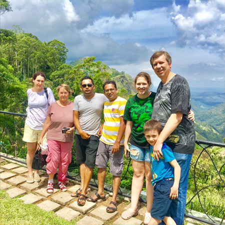
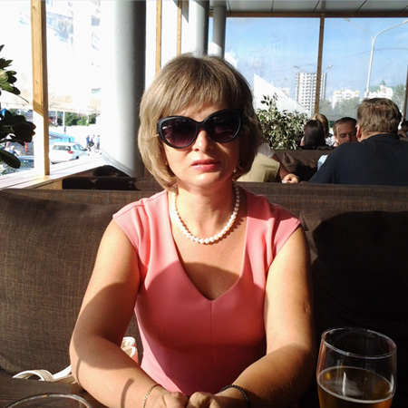

Official Name : Democratic Socialist Republic of Sri Lanka
Government Type : Republic
Location : Latitude 5° 55. to 9°50. north, Longitude 79° 42. to 81° 52., 650km north of the equator
Dimensions : 430km North to South,225km East to West
Coastline : 1,340km
Area : 65,525km
Currency (code) : Sri Lankan Rupee (LKR)
Independence : 4 February 1948
Administrative Capital : Sri Jayewardenepura
Commercial Capital : Colombo
Administrative Divisions : Typically tropical, with a northeast monsoon (December to March) bringing unsettled weather
to the north and east, and a southwest monsoon (June to October)bringing bad weather to the south and west
Terrain : Mostly low, flat to rolling plain; mountains in south-central interior
Highest Mountain : Pidurutalagala, 2,524m
Highest Waterfall : Bambarakanda, 263m
National Flower : The Blue Water Lily (Nymphaeastellata).
National Parks and Nature Reserves Area : 8,000sq.km
Population : 21,128,773
Population Growth Rate : 1.3%
Population Density : 309 people per sq km
Life Expectancy at Birth : 74 female, 64 male
Literacy Rate : Female 87.9 Male 92.5
Ethnic Groups : Sinhalese 73.8%, Sri Lankan Moors 7.2%, Indian Tamil 4.6%, Sri Lankan Tamil 3.9%, other 0.5%,unspecified 10% (2001 census)
Languages : Sinhala (official and national language) 74%, Tamil (national language) 18%, other 8%
Note: English (a link language commonly) is used in government and spoken competently by about 10% of the population
Religion : Buddhist 69.1%, Muslim7.6%, Hindu 7.1%, Christian 6.2%, unspecified 10% (2001 census)
Time Zone : Sri Lanka Standard Time is five and a half hours ahead of GMT. (Allowance should be made for summer-time changes in Europe.)
International Dialing : +94
Electricity : 230 . 240 volts, 50cycles AC. If you travel with a laptop computer bring a stabilizer
Economy : Sri Lanka's most dynamic sectors are food processing, textiles and apparel, food and beverages, port construction, telecommunications, insurance and banking. In2006, plantation crops made up only 15% of exports (90% in 1970), while textiles and garments accounted for more than 60%. About 800,000 Sri Lankans work abroad, 90% of them in the Middle East. They send home more than US$1 billion a year.
Labour Force : 34.3% of the labour population is employed in agriculture, 25.3% in industry and 40.4% in services: 40.4% (30 June 2006 est.) The unemployment rate is 5.7% (2007 est.)
Agriculture & Products : Rice, Sugarcane,Grains, Pulses, Oilseed, Spices, Tea, Rubber, Coconuts, milk, Eggs, Hides,Beef, Fish
Industries : Processing of rubber,tea, coconuts, tobacco and other agricultural commodities,telecommunications, insurance, banking; clothing, textiles, cement, petroleum refining.
Exports : Textiles and apparel;tea and spices; diamonds, emeralds, rubies; coconut products, rubber manufactures, fish
Imports : Main import commodities are textile fabrics, mineral products, petroleum, food stuffs,machinery and transportation equipment: $10.61 billion f.o.b. (2007 est.).Percentage of main commodities from main import partners: India 19.6%, China10.5%, Singapore 8.8%, Iran 5.7%, Malaysia 5.1%, Hong Kong 4.2%, Japan 4.1%(2006)
Gross Domestic Product(GDP) : Purchasing power parity: $81.29 billion (2007 est.). Official exchange rate: $30.01 billion(2007 est.) Real growth rate: 6.3% (2007 est.) Per capita: $4,100 (2007 est.)composition by sector: Agriculture: 16.5% Industry: 26.9%
Gross National Product(GNP) : Sri Lanka is placed in 76th place in GNP figures of the world’s nations with $22.8billion(2005)
Flag Description : Yellow with two panels; the smaller hoist-side panel has two equal vertical bands of green(hoist side) and orange; the other panel is a large dark red rectangle with a yellow lion holding a sword, and there is a yellow bo leaf in each corner;the yellow field appears as a border around the entire flag and extends between the two panels
SRI LANKA RISING
With the end of the three decade long war Sri Lanka is seeing a sudden burst in infrastructure development and a of a new Sri Lanka rising. Today post-war Sri Lanka is seeing a rapid and wide spread infrastructure development within rural and urban areas as never seen in the country before.The island-wide road development program is at the center of this effort. The improved connectivity enabled by road development, particularly rural roads, generates significant economic and social returns. It is having a trans formative impact on the lives of people around the country. The completion of the highway network (commencing with the Southern Highway, Katunayake Expressway and Colombo Ring Road) will bring about significant cost-savings that will boost the competitiveness of the economy.
The rural electrification program has now extended power to 91% of the country’s households. It is bringing considerable benefits, particularly to poor and vulnerable households (not least through the improved environment for children’s studies). The completion of the much delayed Norochcholai coal power station has helped to avoid power cuts or recourse to hiring exceedingly expensive barges for thermal generation.
The rehabilitation of the railway network and rolling stock, combined with the road development, will increase mobility and help to contain transport costs which are an important determinant of an economy’s competitiveness. Port and airport development is also creating the potential for Sri Lanka to become a key transport and tourist/transit hub for Asia. The completion of the Hambantota Port and the Colombo Southport Expansion will increase the capacity to take advantage of the country’s strategic location on the major international shipping lanes.
The growth of Indian trade and China’s appetite for natural resources from the Middle East and Africa creates the conditions for rapid expansion of activity in this sector. The second international airport at Mattala increases the potential for handling increased tourist arrivals and positioning Sri Lanka as a transit hub. Today Sri Lanka’s Bandaranayake International Airport (is the busiest airport in the country with more than 6 million passengers per year, Hambantota International airport in Mattala was declared opened in March, 2013 when Sri Lanka is celebrating a century in aviation.The domestic airports are scattered around the country in Ampara, Anuradhapura, Batticaloa, Ratmalana, Jaffna, Trincomalee and Wirawila creating an extensive network of domestic air traveling.
. With Endless beaches, timeless ruins, welcoming people, herds of elephants, killer surf, cheap prices, fun trains, famous tea, flavorful food, newly gained peace and improved infrastructure Sri Lanka had been repeatedly named the next tourist destination worth all the investments. Fueled by piles and piles of compliments as the best tourist destination in the world and with years of war behind it for good, Sri Lanka is rising and its time you dropped in.
“
Yuri
June 2015
Australia

“
Alexey
November 2016
Russia

“
Elena
July 2017
Russia

“
Yuliya
Jan 2018
America

“
Igor Antonov
March 2018
Russia

.png)